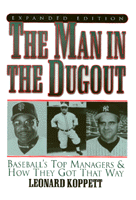

<body bgcolor="#FFFFFF" text="#000000" link="#0000FF" vlink="#CC0000" alink="#CC0000"><center><hr width="350" size="1" align="center" noshade>A Hall of Fame sportswriter analyzes managers' stragegies<hr width="350" size="1" align="center" noshade><p><a href="https://cdcshoppingcart.uchicago.edu/Cart/ChicagoBook.aspx?ISBN=9781566397452&&PRESS=temple" target="_top">Buy this book!</a> | <a href="https://cdcshoppingcart.uchicago.edu/Cart/Cart.aspx?PRESS=temple" target="_top">View Cart</a> | <a href="https://cdcshoppingcart.uchicago.edu/Cart/Cart.aspx?PRESS=temple" target="_top">Check Out</a></p><p></p></center><!--none//--><h1>The Man in the Dugout</h1>
<H2>Baseball's Top Managers and How They Got That Way</H2>
<H2>Expanded Edition</H2>
<h3>Leonard Koppett</h3>
<P>cloth 1-56639-745-6 $44.50, Feb 00, <FONT COLOR=#990033>Available</FONT>
<BR> 424 pp
7x10
4&nbsp;tables
</P><BLOCKQUOTE><I>"Leonard Koppett is the perfect man to write a book about managers. He could've been a terrific manager if he hadn't decided to become a terrific sportswriter. Koppett understands people. He is a master of analysis, statistical or theoretical."</I>
<BR>&#151<B>Dick Schaap</B><I></I></BLOCKQUOTE>
<p>Baseball fans love to second-guess managers' strategies and speculate about their styles of managing and Leonard Koppett is no exception. Koppett brings 52 years as a working baseball writer to his understanding of these men in the dugout.
<p>His analysis is based on personal interaction with all of the managers active since 1950 and their descriptions and judgments of the generation of men who preceded them. Every manager inherits his method from some influential manager he played for. Three seminal figures&#151John McGraw, Connie Mack, and Branch Rickey&#151form the trunk of a genealogical tree whose branches have eventually intertwined, but whose key characteristics remain identifiable nearly a century later in the style of current headliners like Joe Torre, Jim Leyland, Tony LaRussa, Dusty Baker, and Bobby Cox.
<p>This highly acclaimed study, first published in 1993, has been updated to the year 2000 and now includes some recent winning managers and completes the careers of others.
<BR>&nbsp;<h2>Excerpt</h2><P>Excerpt available at <a href="http://www.temple.edu/tempress">www.temple.edu/tempress</a></p>
<BR>&nbsp;<h2>Reviews</h2>
<p><i>"Long before the 'scholarly' study of baseball became something of a cottage industry, Leonard Koppett was out there doing it on his own with his keen reporter's eye, tireless research, and logical mind. Through the years, reading Koppett has been a joy and an education."</i>
<br>&#151<b>Bob Costas</b>
<p><i>"What a pleasure it is to read Leonard Koppett on the history and science&#151no, make that Art, with a capital A&#151of managing a major-league baseball team."</i>
<br>&#151<b>Robert W. Creamer</b>, author of <i>Babe: The Legend Comes to Life</i>, <i>Stengel</i>, and <i>Baseball in '41</i>
<p><i>"Nobody in sports has ever provided your brain with a better workout than Leonard Koppett. To borrow from the old E. F. Hutton spot, 'When Leonard Koppett talks, I listen&#151very, very attentively.'"</i>
<br>&#151<b>Al Michaels</b>
<BR>&nbsp;<h2>Contents</h2><P>
<p>Preface to the Expanded Edition
<br>Introduction
<p><b>Part I: The Creators</b>
<br>1. The Antecedents
<br>2. John McGraw
<br>3. Connie Mack
<br>4. Branch Rickey
<p><b>Part II: The Developers</b>
<br>5. Miller Huggins
<br>6. Joe McCarthy
<br>7. Bill McKechnie
<br>8. Casey Stengel
<p><b>Part III: The Descendants</b>
<br>9. Leo Durocher
<br>10. Al Lopez
<br>11. Frank Frisch
<br>12. Paul Richards
<br>13. Loose Ends
<p><b>Part IV: The Moderns</b>
<br>14. Walter Alston
<br>15. Ralph Houk
<br>16. Alvin Dark
<br>17. Billy Martin
<br>18. Dick Williams
<br>19. Earl Weaver
<br>20. Sparky Anderson
<br>21. Tommy Lasorda
<br>22. The Rest of the Story
<br>23. Looking Ahead
<p>A Final Word
<br>Appendix
<br>Index
</P><BR>&nbsp;<H2>About the Author(s)</H2>
<table><tr><td valign="top"><img src="/tempress/authors/1471_au.gif" height="90" width="75"></td><td width="100%" valign="middle"><p><b>Leonard Koppett</b> has been writing about baseball since the 1940s (his earliest memories include seeing Babe Ruth hit and John McGraw manage) for the New York City newspapers, the San Francisco Bay Area newspapers, and <i>The Sporting News</i>. He is author of half a dozen baseball books including <i><a href="1416_reg.html" target="_top">Koppett's Concise History of Major League Baseball</a></i> (Temple). He is the winner of the J. G. Taylor Spink Award from the Baseball Writers' Association of America. Koppett is the only sportswriter named to the writers' wing of both baseball and basketball Halls of Fame.</P></td></tr></table>
<BR><H2>Subject Categories</H2>
<p><A HREF="/tempress/sports.html" TARGET="_top">Sports</a>
<BR><A HREF="/tempress/general.html" TARGET="_top">General Interest</a>
</p>
<p align="center"><a href="https://cdcshoppingcart.uchicago.edu/Cart/ChicagoBook.aspx?ISBN=9781566397452&&PRESS=temple" target="_top">Buy this book!</a> | <a href="https://cdcshoppingcart.uchicago.edu/Cart/Cart.aspx?PRESS=temple" target="_top">View Cart</a> | <a href="https://cdcshoppingcart.uchicago.edu/Cart/Cart.aspx?PRESS=temple" target="_top">Check Out</a></p><p><font face="Arial" size="1"><a href="copyright.html" onMouseOver="window.status='Web Copyright Policy';return true;" onMouseOut="window.status=''" title="Web Copyright Policy">&copy;</a> 2015 <a href="http://www.temple.edu" target="new" onMouseOver="window.status='Link to Temple University home page';return true;" onMouseOut="window.status=''" title="Link to Temple University home page">Temple University</a>. All Rights Reserved. http://www.temple.edu/tempress/titles/1471_reg.html</font></p>